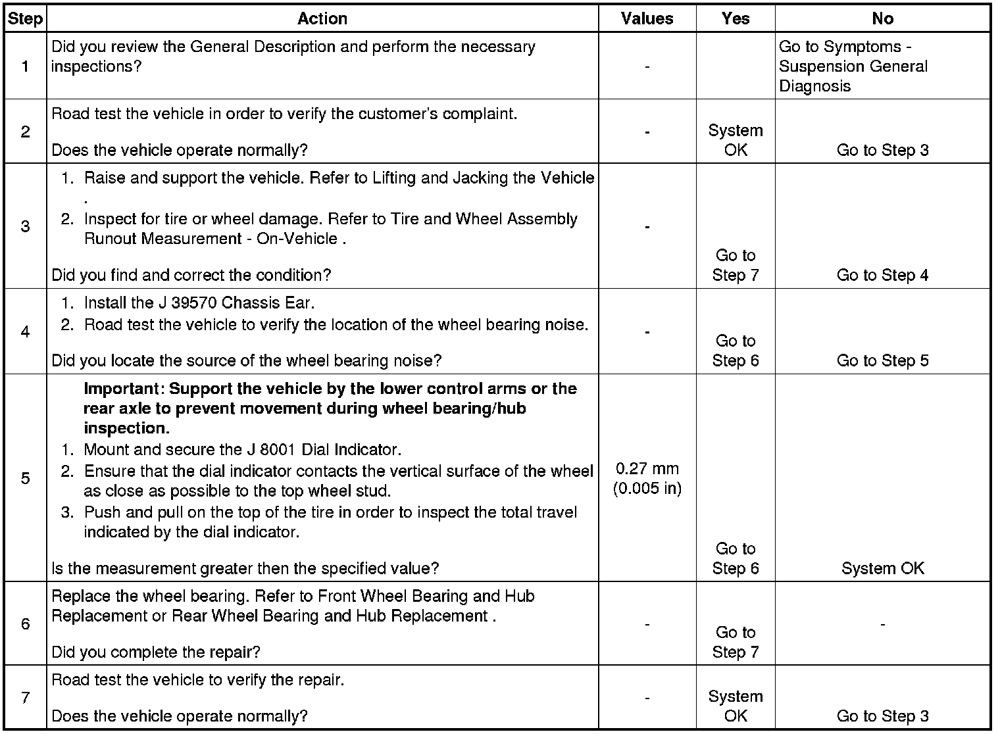

Operation CHARM
: Car repair manuals for everyone.
Home
>>
Cadillac
>>
2008
>>
SRX AWD V8-4.6L
>>
Repair and Diagnosis
>>
Steering and Suspension
>>
Suspension
>>
Wheel Bearing
>>
Testing and Inspection
Wheel Bearing: Testing and Inspection
Wheel Bearings
Diagnosis
